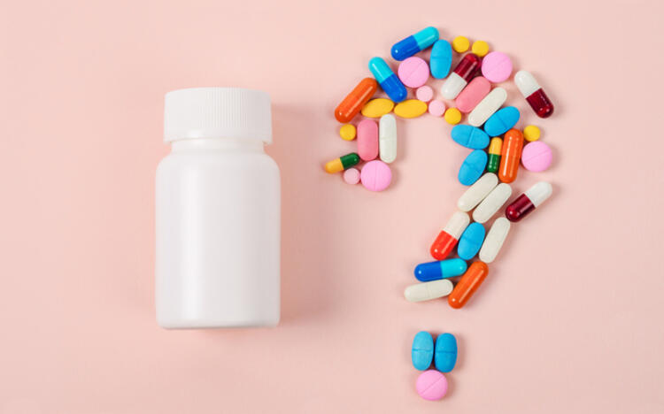

Drug discovery is the process of identifying and developing new medications or therapeutic treatments to address various diseases and medical conditions. It involves several stages of research and development aimed at finding chemical compounds or biological agents that can effectively target specific disease processes, alleviate symptoms, or cure the condition.
The process of drug discovery typically begins with target identification, where researchers identify a specific biological target, such as a protein or enzyme, that is involved in a disease process. This target is often associated with a particular disease pathway or mechanism. Once the target is identified, researchers then search for compounds or substances that can interact with the target and modulate its activity.
Drug discovery has a profound impact on healthcare for several reasons. It addresses unmet medical needs by targeting diseases that currently lack effective treatments or cures. Through the identification of novel targets and the development of compounds that interact with them, drug discovery expands the therapeutic options available to physicians and patients alike. This leads to improved disease management and better patient outcomes.
